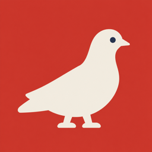
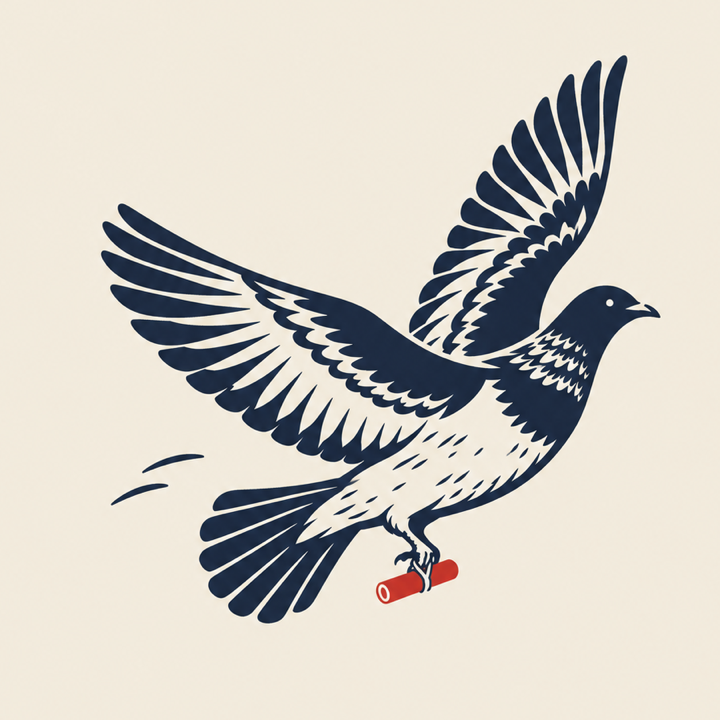

- 寄
- Mac 上的 Claude Code
- 收
- Windows 上的 Codex
在这台写，在那台验证
代码在 Mac 上改，构建、跑测试、需要显卡或 Windows 环境的事交给另一台。结果回来之前，这边接着干别的。

Pigeon信鸽Pigeon 替 agent 送纸条。Claude Code 写一句话，交给信鸽，另一个工具或另一台电脑上的 agent 收到后开工，干完了回信再飞回来。
还在早期开发：跨设备送信已经在 Mac 到 Windows 的 Codex 之间跑通，命令和界面正在制作。

每台电脑是一个鸽舍。纸条从这边放飞，对方 agent 空下来才会收到；它干完活，回信沿原路飞回。点一下试试。
平时不用记命令，直接告诉正在干活的 agent 要把话带给谁。想自己动手时，也有一组命令。
# 能飞到哪些鸽舍 $ pigeon lofts 本机 Codex · Claude Code CHEN-Y9000P Codex # 放飞一张纸条 $ pigeon send --to codex@CHEN-Y9000P \ "构建 main 分支，把报错带回来" 已放飞 脚环 m-3f9a # 等它归巢，读回信 $ pigeon wait m-3f9a 已归巢 用时 42 秒 $ pigeon read m-3f9a
命令还在制作中，名字可能调整。目前跨设备这一段依赖 Codex 桌面应用已连接的远程设备。
凡是“这件事换个 agent 或换台电脑做更合适”的时候。
代码在 Mac 上改，构建、跑测试、需要显卡或 Windows 环境的事交给另一台。结果回来之前，这边接着干别的。
刚写完的改动，让没参与的 agent 独立看一遍。它只收到那张纸条，不带这边的成见。
在对方电脑上新开一个对话去跑长任务。信鸽归巢时提醒你，不用守着。
需要生成图片时交给会画图的 Codex，画好后把文件位置带回来，这边继续排版。
agent 之间能互相派活之后，最要紧的是不失控。
| 叫法 | 中文 | 指的是 |
|---|---|---|
| Loft | 鸽舍 | 一台电脑 |
| Flock | 鸽群 | 这台电脑上的各个 agent |
| Note | 纸条 | 一条消息 |
| Band | 脚环 | 消息的编号 |
| Perch | 栖木 | 屏幕刘海或侧边的提醒条 |